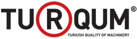

Orta Anadolu Makine ve Aksamlarý Ýhracatçýlarý Birliði (www.makinebirlik.org) bünyesinde kurulan Makine Tanýtým Grubu (MTG, www.makinetanitimgrubu.org), Türk makinesinin iç ve dýþ pazarlardaki algýlamasýný güçlendirmek amacý ile tanýtým ataðý baþlattý. Grup, Türk makinesini iç ve dýþ pazarlarda tanýtmak, sektörün pazar ve ihracat potansiyelini yükseltmek için yürüteceði kampanya için 5 milyonu tanýtým ve iletiþim olmak üzere, Ar-Ge ve diðer projeleri için toplam 10 milyon TL'lik bir bütçe ayýrdý;
- Makine Tanýtým Grubu Eþ Baþkaný Adnan Dalgakýran, "Dünyada Türkiye denince akla makine ve teknoloji geliyor. Türk makine sanayicileri olarak hem dünyada hem Türkiye'de bu algýlamayý kuvvetlendirmek için yola çýktýk" dedi.
- Makine Tanýtým Grubu Baþkaný Ali Rýza Oktay, "Sektörel bir sivil hareket olarak MTG, makine sektörünün kapsamý dikkate alýndýðýnda kurumsal yaþama yeni bir soluk getirmekle kalmamýþ, saðladýðý konsensüs ile diðer sektörlere örnek olmuþtur" diye konuþtu.
Makine Tanýtým Grubu, Türk makinesi ile ilgili algýlamayý güçlendirmek ve sektörün pazar payýný yükseltmek amacýyla baþlattýðý tanýtým ve iletiþim kampanyasýnýn startýný MTG Baþkaný Ali Rýza Oktay ile Makine Tanýtým Grubu Eþ Baþkaný Adnan Dalgakýran'ýn ev sahipliðinde Çýraðan Sarayý'nda düzenlenen törenle verdi.
Toplantýda söz alan MTG Eþ Baþkaný Adnan Dalgakýran, "Þunu gururla ifade edebilirim ki Türk Makine Sanayi; kalitesi, teknolojisi, insan kaynaðý ve rekabetçi fiyatýyla dünya makine sektörüne yön vermektedir" dedi.
Ýki aþamalý tanýtým kampanyasý
Nitelikli makine iþçiliði yapýlan Türkiye'de Makine Tanýtým Grubu'nun, Türk malýný teþvik eden ve sektörün yönünü belirleyen kuruluþ olduðunun altýný çizen Dalgakýran, "MTG'nin etkili iletiþim projelerini kapsayan, çok sayýda kanaldan yüksek frekanslý reklam ve tanýtým çalýþmalarýný içeren kampanyamýz iki aþamadan oluþuyor. 2009 sonuna kadar sürecek ilk aþamasýnda yerli yatýrýmcýlarýn Türk makinelerini tercih etmelerini saðlamak için etkili bir iletiþim kampanyasý yürüteceðiz. Yýlbaþýndan sonra baþlayacak ikinci aþamada ise yurt dýþýnda Türk makineleri ile ilgili algýlamayý güçlendirmeye yönelik çalýþmalar devreye girecek" diye konuþtu.
Ýhracattan daha fazla makine ithal ediliyor
"Ancak hedeflediðimiz çalýþma bu kadarla sýnýrlý deðil. Hedefimize ulaþmak için entegre bir strateji dahilinde hareket edilmesi gerektiðinin bilinciyle markalaþma, Ar-Ge ve tanýtým çalýþmalarýnýn organize edilmesi noktasýnda gerekli finansmanýn saðlanmasý da yine MTG tarafýndan gerçekleþtirilecektir" diyen Adnan Dalgakýran, "Sadece yabacýlar deðil, yerli yatýrýmcýlarýnda da Türk Makine Sektörü ile ilgili yeterli bilgi oluþturulmasý gerekiyor. Sektörde üst düzey kaliteye ulaþýldý ve bugün Türk Makine Sektörü 200 ülkeye kendi markasý ile ihracat gerçekleþtiriyor. Türk Makine Sektörü, imalatýnýn yüzde 80'ini ihraç ediyor. Ancak bundan daha fazla makine ithal ediliyor. Türk Makine Sektörü ürünler, ithal makinelerle kýyaslandýðýnda ülkemizde ayný kalite, ayný fayda ve maliyet dengesi, daha uygun servis ve lojistik hizmetiyle satýn alýnabiliyor" dedi.
Adnan Dalgakýran, sözlerini þöyle sürdürdü:
"Ýnsan inandýðý bir þey için yola çýkar. Biz de Türk makine sanayinin dünyada önemli bir yeri olduðuna inanýyoruz. Ýçeride daha kuvvetli olursak, ihracatta da büyük bir ivme kazanacaðýmýzý biliyoruz. Bütün bu çalýþmalar sadece makine sektörünün geliþimine hizmet etmeyecek. Diðer sektörlere katkýsýnýn ne olacaðýna iliþkin de bir araþtýrma yapýyoruz. Elimizi deðil, gövdemizi, gövdemizi deðil, kafamýzý taþýn altýna koyduk."
Konuþmasýnýn ardýndan sorularý yanýtlayan Dalgakýran, geliþmekte olan bir ülke konumundaki Türkiye'nin ihracatla büyümesi için kur seviyesinin önemli olduðunu belirterek, "Katma deðer üreten ülke noktasýna geçtiðimiz zaman, ihracatýmýz kurlarla çok baðlantýlý olmayacak. Sanayisi emek yoðun sektörlerden oluþan bir ülke olarak Türkiye'nin, ithalata açýk, ihracatýn önünde kur engeli olan bir ülke olmasýnýn saðlýklý olmadýðýný düþünüyoruz" deðerlendirmesinde bulundu.
AB'de toplam 25 bin, Türkiye'de ise 23 bin makine üreticisi bulunduðuna dikkati çeken Dalgakýran, ölçek ekonomisinin saðlanmasýnda firmalarýn birleþmesinin ve bunun önünü açacak mekanizmalarýn oluþturulmasýnýn önemini vurguladý.
Dalgakýran, tanýtým grubunun þu an için 10 milyon liralýk bir fona sahip olduðunu, ancak ileride bu rakamýn daha büyüyeceðini ifade etti.
Önümüzdeki dönemde Türkiye makine sanayinin, geliþmiþ ülkelere göre avantajlý olacaðý bir dönemin yaþanacaðýný dile getiren Dalgakýran, þöyle devam etti: "Ancak gizli korumacýlýðýn yaygýn hale geleceðine dair bir kanaat var. Bunu nasýl aþabiliriz, kendimizi nasýl koruyabiliriz. Bunun üzerine çalýþmalýyýz. Türkiye'de ise tercih edilmekte en çok sýkýntý yaþadýðýmýz alan, büyük þirketlerde karar alýcI mühendis arkadaþlarýmýz. Risk almama adýna, para da ceplerinden çýkmadýðý için, doðrudan yabancý markalarý tercih edebiliyorlar."
Makine sanayi tüm sektörlerin temeli
Makine sanayinin Türkiye'nin lokomotifi olarak kabul edilen tüm sektörlerin temelini oluþturduðunu ve her biri için vazgeçilmez olduðunun altýný çizen Makine Tanýtým Grubu Baþkaný Ali Rýza Oktay, "2008 yýlýnda makine sektörünün tamamýna ait ihracat rakamlarý bir önceki yýla göre yüzde 18,2 oranýnda artarak 10,9 milyar dolara, ithalat rakamlarý ise yüzde 0,2 oranýnda artarak 23,3 milyar dolara yükselmiþtir. Toplam makine imalat deðeri bakýmýndan Türkiye Avrupa'da 6'ncý sýradayken Avrupa ülkelerindeki toplam imalatýn yüzde 5'ini gerçekleþtirmektedir. Önümüzdeki 5 yýl içerisinde makine imalatýndaki yýllýk artýþýmýzýn ortalama yüzde 12-15 düzeyinde olmasý beklenmektedir" dedi.
Türk makine sanayinin 500 bine yakýn kiþiye istihdam saðladýðýna iþaret eden Oktay, ihracata iliþkin olarak ise þu bilgileri verdi: "2008 yýlýnda sektör ihracatýnýn en fazla yapýldýðý ilk üç ülke Almanya, Rusya Federasyonu ve ABD iken 2009 ocak-mayýs döneminde Almanya, ABD ve Irak olmuþtur. Irak'a gerçekleþtirilen ihracat söz konusu dönemde yüzde 56 artýþ göstermiþtir. 2008 yýlýnda makine sektörünün tamamýna ait ihracat rakamlarý bir önceki yýla göre yüzde 18,2 oranýnda artarak 10,9 milyar dolara, ithalat rakamlarý ise yüzde 0,2 oranýnda artarak 23,3 milyar dolara yükselmiþtir. Toplam makine imalat deðeri bakýmýndan Türkiye, Avrupa'da 6. sýradayken Avrupa ülkelerindeki toplam imalatýn yüzde 5'ini gerçekleþtirmektedir. Önümüzdeki 5 yýl içerisinde makine imalatýndaki yýllýk artýþýmýzýn ortalama yüzde 12-15 düzeyinde olmasý beklenmektedir."
Ýhracatýn yaný sýra iç pazarýn önemine de deðinen Oktay, imalat deðerinin 30 milyar dolar olduðu tahmin edilen iç pazarda da sektör adýna önemli adýmlarýn atýlabileceðini dile getirdi.
Oktay, "Türk makine sektörü, imalatýnýn yüzde 80'ini ihraç ediyor. Ancak bundan daha fazla makine ithal ediliyor" dedi.
Tüm sosyal paydaþlarý harekete geçirecek projeler
MTG'nin önümüzdeki dönemde gerçekleþtireceði projeler arasýnda akademik camia ile iþbirliðine gidilmesi, Makine Sektörü'nde standardizasyon konusunda yaþanan sýkýntýlarýn önüne geçilebilmesi için bir makine reyting-güven endeksi oluþturulmasý, sektör üyelerine eðitim ve danýþmanlýk veren MTG Teþvik Kurulu adýnda bir alt birim kurulmasý, yerli üreticilerin en büyük dezavantajý olarak ortaya çýkan teknoloji takibindeki sýkýntýlarý aþmak adýna bir Ar-Ge üssü kurulmasý gibi planlar yer alýyor.
Ayrýca MTG'nin Anadolu'ya bir çýkarma yaparak yerli üretici ile ilgili bilgilendirmeler yapmayý, lokal yatýrýmcýlar ile bir araya gelecek seminerler gerçekleþtirmeyi, üreticilerin ürünlerinin pazarlanmasý konusunda destek vermesi için MTG Pazarlama Grubu oluþturmayý ve geleceðin sektör çalýþanlarýný keþfetmek amacý ile üniversitelerin makine ve endüstriyel tasarým bölümü öðrencilerinin katýlýmý ile Makine Tasarým Yarýþmasý düzenlenmeyi planladýklarý da bahsedilen konular arasýndaydý.
Makine Tanýtým Grubu (MTG) Hakkýnda:
MTG, Orta Anadolu Makine ve Aksamlarý Ýhracatçýlarý Birliði Yönetim Kurulu tarafýndan makine sektörünün yurt dýþýnda daha etkin bir þekilde tanýtýlabilmesi, makine ve aksamlarý sektörünün ihracatýnýn artýrýlmasý, yurt içinde ve yurt dýþýnda imajýnýn geliþtirilmesine yönelik faaliyetlerinin gerçekleþtirilmesi, markalaþma, Ar-Ge ve ortak tanýtým çalýþmalarýnýn organize edilmesi amacýyla gerekli finansmanýn saðlanmasýna yönelik olarak kararlaþtýrýlmýþ ve söz konusu Birliðin 11 Nisan 2007 tarihinde gerçekleþtirilen 2006 yýlý Olaðan Genel Kurulu'nda kararlaþtýrýlarak faaliyete geçmiþtir.
Grup; DTM Ýhracat Genel Müdürlüðü'nden Baþkan olarak görev yapan bir temsilci ile Makine ve Aksamlarý Ýhracatçýlarý Birliði Yönetim Kurulu'nca, Yönetim Kurulu ve/veya anýlýn Birliðin Genel Kurul Üyeleri arasýndan seçilen dokuz kiþi olmak üzere toplam 10 üyeden oluþmaktadýr. Ayrýca, Birlik Yönetim Kurulu üyeleri arasýndan bir kiþi eþbaþkan olarak seçilmektedir.
Ýlgili videolar:
Ýlgili haberler:
MTG üyesi Erensan Isý Cihazlarý Pazarlama ve Servis A.Þ.'nin sahibi Ali Eren, tanýtým eksikliðinin kendilerinden kaynaklandýðýný dile getirdi. Türk insanýnýn makinenin teknoloji olduðunu bilmediðini ifade eden Eren bir anýsýný þöyle aktardý: "3 hafta önce Çin'e üst düzey þirket ve banka yöneticilerinin de katýldýðý buhar türbini fabrikasý gezisinde makinelere hayranlýðýmý gören bankacý arkadaþým, 'Ne var burada hayran olunacak, teknoloji bunun neresinde?' diye söylendi." Gezinin kendisi için büyük ders olduðunu aktaran Eren, "Böyle bir bankacý bu gibi projelere kredi saðlar mý?' diye düþünmeden edemedim. Makine sektörünü tam anlamýyla anlatamamýþýz. Tek suçlu kendimiziz." dedi.
Yerli makine kullanýmýna Türk milletinin soðuk durduðunu anlatan Ali Eren, "Rize Üniversitesi'nin yapý iþleri müdürü ille de "Alman kazaný kullanýlacak."' deyip yerli malý kullanmadý. Bizim ürünlerin 4 katý para ödediler." bilgisini verdi. Herkesin istediði ürünü alabileceðine dikkat çeken Eren, yurtiçinde bu durumu yaþamalarýna karþýlýk Cambridge Üniversitesi'nin kampüsünün kendi kazanlarý ile ýsýndýðýný anlattý.
Makine Tanýtým Grubu (MTG) üyelerinden, Darka Plastik Makineleri Ýmalat ve San. Tic. Ltd. Þti.'nin yönetici ortaðý Merih Eskin ise üretim olarak dünya standartlarýný yakaladýklarýný, ancak tanýtým eksikliði yüzünden farklý algýlandýklarýný bildirdi. "Üretim üretim derken ürünlerimizin tanýtýmýný ve pazarlamasýný unuttuk." diyen Eskin, en büyük hatalarýnýn kendilerini tanýtamamak olduðunu söyledi.
Makine sektöründe kendi tasarýmýyla 25 farklý model üreterek 10 milyon Euro'luk bir iþ hacmine ulaþan Eskin, plastik poþet üretiminde kullanýlan makine alanýnda kendi teknolojilerini ürettiklerini söyledi.
Eskin, makine sektörünün desteklenmesi gerektiðinin altýný çizerek, "Cari açýðýn yüzde 20'si makine ithalatýndan oluþuyor. Türkiye geçen yýl makine ithalatýna 23,3 milyar dolar ödedi. Yazýktýr, aynýsý burada yapýlýyor. Ürettiðimiz makinelerde yerli girdi oraný yüzde 80-85 civarýnda" dedi.
Sektörün bir baþka projesi de TURQUM (www.turqum.com.tr).
Bu projenin yurt içi ve yurt dýþýnda tanýtýlacaðýný söyleyen Eskin, uluslararasý üretim yapan þirketlerin TURQUM, kalite belgesine sahip ürünlerinin, fuar, pazarlama ve tanýtým ek desteði olarak tanýtým fonundan aktarýlacak paydan daha büyük oranda faydalanacaðýný belirtti.
Kaynaklar:
|